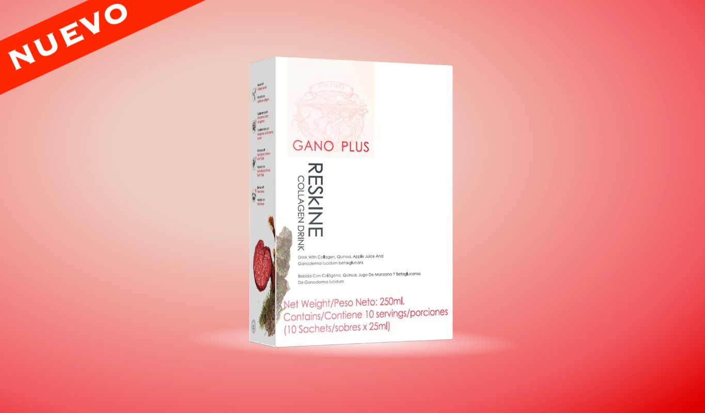

Colageno
Mocha
Latte
3_en_1
Chocolate
Te
Tinto
Cereal
Crema_dental
Jabon
Shampoo
Acondicionador
Exfoliante
Ganoderma
Excellium
CordyGold

RESKINE Collagen drink X 10 sachets
- Ayuda a reducir las arrugas y las lineas de expreción
- Hidrata y aporta elasticidad a la piel
- Alivia el dolor y mejora la movilidad de las articulaciones
- Contribuye a la fortaleza y densidad ósea
- Reduce el riesgo de fracturas y osteoporosis
- Estimula el crecimiento del cabello y fortalece las uñas
- 100% colágeno puro de origen marino
- Libre de antibiótico, hormonas y conservantes
- Bajo en calorias, 20 calorías por porción
- Fortalece las defensas del cuerpo
PV 31 / CV 27
$183.500 / $238.800